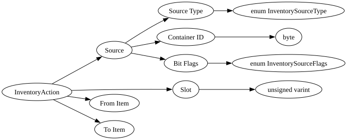

| Field Name | Field Type | Field Constraints | Field Notes |
|---|---|---|---|
| Source | InventorySource | The inventory source identifying which container this action targets. | |
| Slot | unsigned varint | <div style="padding-left: 0px;">Minimum = 0</div> | The slot index within the source container. |
| From Item | NetworkItemStackDescriptor | The item descriptor representing the state of the slot before this action. | |
| To Item | NetworkItemStackDescriptor | The item descriptor representing the desired state of the slot after this action. |